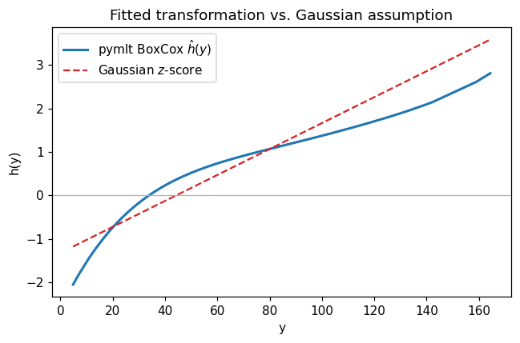
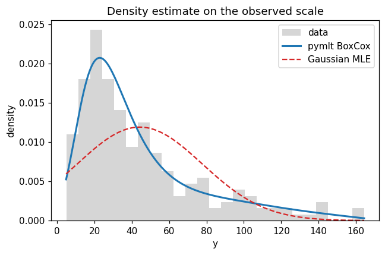

Note
This page was generated from the notebook examples/01_boxcox_regression.ipynb.
Flexible normal-distribution regression with Box-Cox#
The classical Box-Cox power transform fixes a one-parameter family of monotone maps that pull a skewed response closer to a normal distribution. That parametric choice is often too rigid: the resulting likelihood can still be badly mis-specified when the true transformation has shape that no single power captures.
pymlt.BoxCox replaces the power family with a flexible monotone Bernstein polynomial. The model fits a transformation \(h(y)\) by maximum likelihood under the constraint that \(h\) is non-decreasing, and assumes \(h(Y)\sim\mathcal{N}(0,1)\). This reproduces Figure 2 of Hothorn (2020), Most Likely Transformations: The mlt Package.
In this vignette we:
Generate a strongly skewed log-normal response.
Fit
pymlt.BoxCoxand visualise the estimated \(h(y)\).Compare the resulting density and log-likelihood with a Gaussian fit.
[1]:
import numpy as np
import matplotlib.pyplot as plt
from scipy import stats
import pymlt
rng = np.random.default_rng(0)
plt.rcParams["figure.dpi"] = 110
Synthetic log-normal data#
200 observations from \(Y = \min(X, 200)\) with \(X\sim\text{LogNormal}(3.5, 0.8)\). The upper clip keeps the support bounded — a requirement of the Bernstein basis.
[2]:
y = rng.lognormal(mean=3.5, sigma=0.8, size=200).clip(0, 200)
print(f"n = {y.size}, min = {y.min():.2f}, max = {y.max():.2f}, skew = {stats.skew(y):.2f}")
n = 200, min = 4.86, max = 164.34, skew = 1.36
Fit the Box-Cox transformation model#
The support argument defines the compact interval on which the Bernstein basis lives. A small padding on both sides avoids numerical issues at the boundary. order=6 is a reasonable default for \(n \approx 200\).
[3]:
support = (float(y.min()) - 0.1, float(y.max()) + 0.1)
model = pymlt.BoxCox(support=support, order=6)
model.fit(y)
print(model.summary())
Model: BoxCox
Support: (4.761824153332582, 164.4361568575963)
Basis order: 6
Fitted: Yes
Log-lik: -932.7197
Converged: Yes
n_restarts: 0
The estimated transformation \(h(y)\)#
fitted_transformation evaluates \(h(y) = B_k(y)\,\hat{\theta}\). Under the Gaussian assumption for the raw response, \(h(y)\) would be an affine \(z\)-score line \((y - \mu)/\sigma\); the fitted curve shows how far the true transformation departs from linearity.
[4]:
y_sorted = np.sort(y)
h_fit = model.fitted_transformation(y_sorted)
mu, sigma = y.mean(), y.std(ddof=1)
h_gauss = (y_sorted - mu) / sigma
fig, ax = plt.subplots(figsize=(6, 4))
ax.plot(y_sorted, h_fit, label="pymlt BoxCox $\\hat h(y)$", lw=2)
ax.plot(y_sorted, h_gauss, "--", label="Gaussian $z$-score", color="C3")
ax.axhline(0, color="0.7", lw=0.8)
ax.set_xlabel("y")
ax.set_ylabel("h(y)")
ax.set_title("Fitted transformation vs. Gaussian assumption")
ax.legend()
fig.tight_layout();

Density fit and comparison#
The CTM density on the observed scale is \(f(y) = \varphi(h(y))\,h'(y)\). Overlaying the Gaussian MLE of the same data makes the mis-specification of the naive normal assumption visible.
[5]:
grid = np.linspace(support[0] + 1e-3, support[1] - 1e-3, 400)
pdf_ctm = model.predict(grid, what="density")
pdf_gauss = stats.norm.pdf(grid, loc=mu, scale=sigma)
fig, ax = plt.subplots(figsize=(6, 4))
ax.hist(y, bins=25, density=True, alpha=0.4, color="0.6", label="data")
ax.plot(grid, pdf_ctm, label="pymlt BoxCox", lw=2)
ax.plot(grid, pdf_gauss, "--", label="Gaussian MLE", color="C3")
ax.set_xlabel("y")
ax.set_ylabel("density")
ax.set_title("Density estimate on the observed scale")
ax.legend()
fig.tight_layout();

[6]:
ll_ctm = model.result_.log_likelihood
ll_gauss = stats.norm.logpdf(y, loc=mu, scale=sigma).sum()
print(f"log-likelihood pymlt BoxCox : {ll_ctm:9.2f}")
print(f"log-likelihood Gaussian MLE : {ll_gauss:9.2f}")
print(f"improvement : {ll_ctm - ll_gauss:9.2f}")
log-likelihood pymlt BoxCox : -932.72
log-likelihood Gaussian MLE : -985.53
improvement : 52.81
Takeaways#
The fitted \(\hat h(y)\) is visibly non-linear, concentrating resolution where data are dense and flattening in the heavy right tail.
The Gaussian fit systematically under-predicts the mode and overstates the left tail; the CTM density matches the histogram tightly.
The likelihood gain over the Gaussian MLE is large — the model recovers a far better distributional description from the same data while using only \(k+1 = 7\) shape parameters.
The same fitted object yields CDF, quantile, density, and hazard predictions through
model.predict(..., what=...).